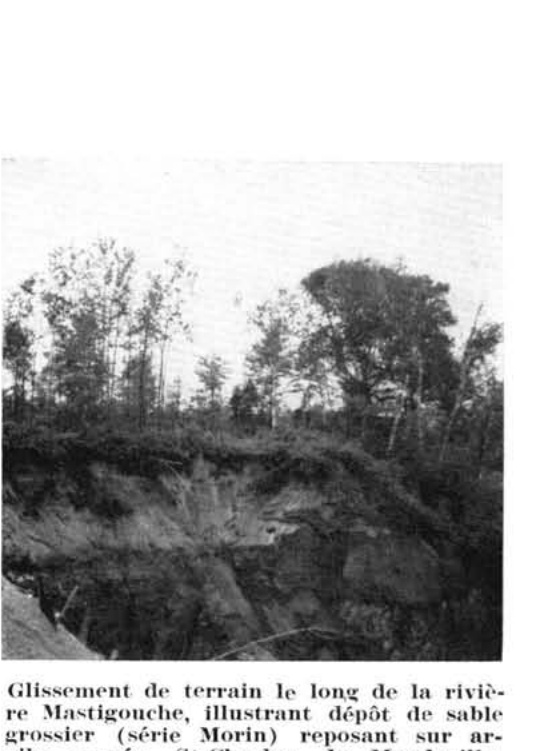

Identification & Caractéristiques Générales
Le matériau parental de la série Morin est constitué de dépôts meubles sableux d'épaisseur considérable, généralement supérieure à trois mètres, mis en place par les cours d'eau glaciaires et les dynamiques fluvioglaciaires ou alluvionnaires. Ce dépôt originel, composé de sables moyens à grossiers dérivés des formations précambriennes gneissiques, granitiques et quartzitiques du bouclier laurentien, tapisse le fond des vallées et le replat des terrasses situées à des altitudes variant généralement entre 90 et 350 mètres. Sur le plan géomorphologique, ces sols occupent des paysages dont la topographie est unie à légèrement ondulée, parfois modifiée par l'action éolienne locale qui façonne des accumulations dunaires. La fraction minérale se caractérise par l'absence quasi totale de cailloux et de blocs erratiques, bien qu'une faible proportion de gravier puisse être observée, tandis que la fraction fine est dominée par des sables grossiers et moyens représentant de 50 à 70 pour cent de la masse, la fraction argileuse étant restreinte à des valeurs de 1 à 3 pour cent.
Sur le plan morphologique et hydropédologique, le profil présente une texture variant du sable au sable loameux ou au sable grossier, conférant au sol une porosité élevée et une forte perméabilité. Le régime hydrique est caractérisé par un drainage naturel excessif à bon, la circulation verticale rapide de l'eau provoquant un assèchement prononcé du profil en période estivale, en raison de l'absence de nappe perchée ou d'horizon à imperméabilité prononcée. Chimiquement, ces sols affichent une réaction fortement acide, nécessitant des interventions correctives pour neutraliser l'acidité active et potentielle. Le profil montre une différenciation typique des podzols, avec un lessivage marqué des sesquioxydes et de la matière organique vers les horizons spodiques sous-jacents, bien que la réserve minérale intrinsèque demeure faible en raison de la nature quartzeuse et silicatée du matériau d'origine.
Les aptitudes agronomiques de la série Morin sont sévèrement limitées par la texture grossière, la faible capacité de rétention en eau et en éléments nutritifs, ainsi que par la sécheresse estivale chronique. La mise en valeur agricole de ces sols ne peut être généralisée et requiert des pratiques de régie rigoureuses, incluant des apports réguliers de matière organique par l'enfouissement d'engrais verts, des chaulages correctifs répétés et des fertilisations minérales fractionnées, particulièrement en phosphore. En raison de la vulnérabilité à l'érosion éolienne sur les sites dénudés et de la faible rentabilité des grandes cultures, bon nombre de parcelles anciennement défrichées ont fait l'objet d'un abandon cultural et d'une reconquête par la végétation forestière pionnière composée de conifères et de bouleau gris. Par conséquent, le reboisement en essences résineuses ou la sylviculture demeurent l'affectation optimale conseillée pour une proportion significative de ces superficies.
Classification Taxonomique & Environnement Pédologique
| Ordre Pédologique | Podzolique |
|---|---|
| Grand Groupe (SCSS) | Podzol humo-ferrique |
| Sous-Groupe Taxonomique | Podzol humo-ferrique orthique |
| Famille Pédologique | Sableuse, mixte sableux, acide |
| Mode de Dépôt Parental | Fluviatile |
| Classe de Drainage Naturel | Très rapidement drainé |
| Régime Thermique & Humidité | Frais / Subaride |
Description Morphologique du Profil Type
Séquences génétiques des horizons pédologiques caractérisant le profil type représentatif de la série Morin :
Profil naturel (vierge) — Comté de Champlain
✓ Source : Comté de Champlain — Page 38Couleur Munsell : 5YR 3/4
Structure & Consistance : Polyédrique à granulaire
Description morphologique : Débris de matière organique, feuilles et aiguilles de conifères partiellement décomposées; brun rouge foncé (5YR 3/4); pH : 4.5.
Couleur Munsell : 5YR 7/1
Structure & Consistance : Polyédrique à granulaire
Description morphologique : Sable gris clair à gris rose (5YR 7/1 - 7/2); pH : 4.5 - 5.0.
Couleur Munsell : 5YR 4/3
Structure & Consistance : Particulaire
Description morphologique : Sable à loam sableux brun rouge (5YR 4/3); contient parfois du gravier; structure particulaire; concrétions ferrugineuses occasionnelles; très perméable; pH : 5.5.
Couleur Munsell : 5YR 5/6, 10YR 5/6
Structure & Consistance : Particulaire
Description morphologique : Sable grossier rouge jaune à brun jaunâtre (5YR 5/6 - 10YR 5/6); contenant parfois des lits de graviers; structure particulaire; très perméable; pH : 5.5.
Couleur Munsell : 5YR 6/3, 10YR 5/6
Structure & Consistance : Polyédrique à granulaire
Description morphologique : Sable grossier à sable graveleux brun rouge clair à brun jaune (5YR 6/3 - 10YR 5/6); très meuble; pH : 5.7.
Profil cultivé (agricole) — Comté de Argenteuil
✓ Source : Comté de Argenteuil — Page 100Couleur Munsell : Non précisée
Structure & Consistance : Polyédrique à granulaire
Description morphologique : Sable limoneux à sable brun à brun clair, contenant de fins granules friables parmi les grains simples; pH 5.0-5.6.
Couleur Munsell : Non précisée
Structure & Consistance : Polyédrique à granulaire
Description morphologique : Observé seulement à l'état de traces dans la majorité des champs cultivés. A l'état vierge, la couche délavée grise a une profondeur de 1 à 4 pouces.
Couleur Munsell : Non précisée
Structure & Consistance : Polyédrique à granulaire
Description morphologique : Sable brun rougeâtre à rouge jaunâtre moyen à grossier, quelquefois légèrement graveleux, généralement meuble et perméable, mais parfois cimenté en ortstein; pH 5.3-6.1.
Couleur Munsell : Non précisée
Structure & Consistance : Polyédrique à granulaire
Description morphologique : Sable brun foncé à brun jaunâtre, grossier à moyen, contenant des lits occasionnels de gravier fin, généralement meuble, mais parfois légèrement cimenté; pH 5.5-6.1.
Couleur Munsell : Non précisée
Structure & Consistance : Polyédrique à granulaire
Description morphologique : Sable brun jaunâtre à brun grisâtre clair avec des couches occasionnelles de gravier, contenant parfois des mottes de sable grossier cimenté; généralement ferme et non compact; présentant des stries rouille à gris clair disposées horizontalement ou irrégulièrement; pH 5.5-6.1.
Profil cultivé (agricole) — Comté de Hull
✓ Source : Comté de Hull — Page 62Couleur Munsell : 10YR 4/3, 7.5YR 3/2
Structure & Consistance : Monogranulaire et fins granules
Description morphologique : Sable loameux brun à brun foncé (10YR 4/3 7.5YR 3/2); structure monogranulaire et fins granules; lâche; très perméable; pH 5.0 à 5.3.
Couleur Munsell : Non précisée
Structure & Consistance : Polyédrique à granulaire
Description morphologique : Couche grise, éluviée.
Couleur Munsell : 7.5YR 5/8, 5YR 4/8
Structure & Consistance : Monogranulaire
Description morphologique : Sable brun vif à rouge jaunâtre (7.5YR 5/8–5YR 4/8); avec parfois un peu de gravier distribué à travers tout l'horizon; structure monogranulaire; très lâche, très ouvert et très perméable; pH 5.2 à 5.5.
Couleur Munsell : 10YR 5/5
Structure & Consistance : Monogranulaire
Description morphologique : Sable brun jaunâtre (10YR 5/5–5/8), avec parfois un peu de gravier dispersé à travers l'horizon; structure monogranulaire; très lâche, très ouvert et très perméable; pH 5.4 à 5.6.
Couleur Munsell : 10YR 5/6
Structure & Consistance : Polyédrique à granulaire
Description morphologique : Sable jaune brunâtre (10YR 5/6–5/8); autres caractéristiques comme dans l'horizon Bf 1.
Couleur Munsell : 10YR 7/4
Structure & Consistance : Polyédrique à granulaire
Description morphologique : Sable moyen à grossier jaune pâle (10YR 7/4–8/4) avec ou sans lits de gravier; très perméable; pH 5.6 à 6.0.
Profil naturel (vierge) — Comté de Joliette
✓ Source : Comté de Joliette — Page 92Couleur Munsell : 10YR 5/2, 10YR 4/3
Structure & Consistance : Polyédrique à granulaire
Description morphologique : Sable loameux à sable graveleux, sans structure, brun gris (10YR 5/2) à brun foncé (10YR 4/3), sans consistance. pH: 5.2 - 6.3.
Couleur Munsell : 7.5Y 4/4, 5YR 4/3
Structure & Consistance : Polyédrique à granulaire
Description morphologique : Sable graveleux à gravier fin, sans structure, brun foncé (7.5Y 4/4) à brun rouge (5YR 4/3), sans consistance. pH: 5.3 - 5.8.
Couleur Munsell : 10YR 5/8
Structure & Consistance : Polyédrique à granulaire
Description morphologique : Sable graveleux à gravier fin, sans structure, brun jaune (10YR 5/8), sans consistance. pH: 5.3 - 5.8.
Couleur Munsell : 2.5Y 6/6
Structure & Consistance : Polyédrique à granulaire
Description morphologique : Sable graveleux à gravier fin, sans structure, jaune olive (2.5Y 6/6), sans consistance, un peu ferme. pH: 5.4 - 5.7.
Profil cultivé (agricole) — Comté de L'assomption
✓ Source : Comté de L'assomption — Page 39Couleur Munsell : 10YR 4/3, 7.5YR 3/2
Structure & Consistance : Polyédrique à granulaire
Description morphologique : Sable brun à brun foncé (10YR 4/3-7.5YR 3/2); fins granules très friables parmi la masse particulaire; très perméable; pH 5.0 à 5.3.
Couleur Munsell : 7.5YR 5/8, 5YR 4/8
Structure & Consistance : Particulaire
Description morphologique : Sable moyen brun vif à rouge jaunâtre (7.5YR 5/8-5YR 4/8); contenant parfois du gravier également distribué parmi le sable; structure particulaire; très perméable; pH 5.2 à 5.5.
Couleur Munsell : 10YR 5/6
Structure & Consistance : Particulaire
Description morphologique : Sable ou sable graveleux brun jaunâtre (10YR 5/6-5/8); structure particulaire; très perméable; pH 5.4 à 5.6.
Couleur Munsell : 10YR 6/6
Structure & Consistance : Polyédrique à granulaire
Description morphologique : Sable jaune brunâtre (10YR 6/6-6/8); autres caractéristiques comme ci-dessous.
Couleur Munsell : 10YR 7/4
Structure & Consistance : Polyédrique à granulaire
Description morphologique : Sable jaune pâle (10YR 7/4-8/4); de grosseur moyenne, avec ou sans couches de gravier; très perméable; pH 5.6 à 6.0.
Profil représentatif — Comté de Maskinongé
✓ Source : Comté de Maskinongé — Page 49Couleur Munsell : 10YR 4/3
Structure & Consistance : Granulaire
Description morphologique : Sable brun foncé (10YR 4/3) structure granulaire, friable. pH : 5.7.
Couleur Munsell : 10YR 6/6
Structure & Consistance : Polyédrique à granulaire
Description morphologique : Sable jaune brun (10YR 6/6 - 6/8) présence de lentilles graveleuses. pH : 6.0.
Couleur Munsell : 10YR 6/3
Structure & Consistance : Particulaire
Description morphologique : Sable très gros, disposé en lits, brun pâle, (10YR 6/3) structure particulaire, meuble. pH : 6.0.
Couleur Munsell : 10YR 7/2
Structure & Consistance : Assez compacte
Description morphologique : Sable grossier, gris clair à brun très pâle, (10YR 7/2 - 7/3) sans structure assez compacte, présence de lentilles graveleuses. pH : 6.1.
Profil cultivé (agricole) — Comté de Portneuf
✓ Source : Comté de Portneuf — Page 60Couleur Munsell : 5YR 2/2, 10YR 4/2
Structure & Consistance : Polyédrique à granulaire
Description morphologique : Sable brun-rouge foncé (5YR 2/2 h), brun-gris foncé à brun (10YR 4/2 à 5/3 s) ; particulaire ; meuble ; racines peu abondantes, microscopiques et très fines, non-orientées ; horizon enrichi par un ensablement éolien ; limite abrupte, régulière ; pH : 6.3.
Couleur Munsell : 5YR 7/1, 5YR 6/1
Structure & Consistance : Polyédrique à granulaire
Description morphologique : Sable gris clair (5YR 7/1 h), gris (5YR 6/1 s) ; particulaire ; meuble ; racines peu abondantes, microscopiques et très fines, verticales ; limite abrupte, interrompue ; pH : 6.2.
Couleur Munsell : 10YR 5/4, 2.5YR 2/4
Structure & Consistance : Polyédrique à granulaire
Description morphologique : Sable brun-rouge foncé à rouge foncé (2.5YR 2/4 à 3/6 h), brun-jaune (10YR 5/4 s) ; particulaire ; meuble ; racines peu abondantes, microscopiques, verticales ; limite abrupte, régulière ; pH : 5.6.
Couleur Munsell : 10YR 5/8, 2.5Y 6/4
Structure & Consistance : Polyédrique à granulaire
Description morphologique : Sable brun-jaune (10YR 5/8 h), brun-jaune clair (2.5Y 6/4 s) ; particulaire ; meuble ; limite distincte, régulière ; pH : 5.3.
Couleur Munsell : 10YR 6/3, 2.5Y 6/4
Structure & Consistance : Polyédrique à granulaire
Description morphologique : Sable fin brun pâle (10YR 6/3 h), brun-jaune clair (2.5Y 6/4 s) ; particulaire ; meuble ; pH : 5.3.
Profil forestier / boisé — Comté de Portneuf
✓ Source : Comté de Portneuf — Page 61Couleur Munsell : 2.5YR 2/0, 10YR 2/2
Structure & Consistance : Polyédrique à granulaire
Description morphologique : Matière organique à demi-décomposée, noire (2.5YR 2/0 h), brun très foncé (10YR 2/2 s) ; sans structure ; meuble ; racines abondantes, grossières à microscopiques, non-orientées ; limite abrupte, ondulée ; pH : 4.8.
Couleur Munsell : 5YR 5/1, 10YR 5/1
Structure & Consistance : Polyédrique à granulaire
Description morphologique : Sable gris (5YR 5/1 h, 10YR 5/1 s) ; particulaire ; meuble ; racines peu abondantes, moyennes, non-orientées ; racines abondantes, très fines et microscopiques, non-orientées ; limite abrupte, ondulée ; pH : 5.1.
Couleur Munsell : 5YR 4/6, 2.5YR 2/2, 10YR 5/4
Structure & Consistance : Polyédrique à granulaire
Description morphologique : Sable loameux à loam sableux rouge-jaune (5YR 4/6 h), brun-jaune (10YR 5/4 à 5/6 s) ; particulaire ; meuble ; racines abondantes, grossières, verticales ; racines peu abondantes, très fines et microscopiques, non-orientées ; concrétions rouge très sombre (2.5YR 2/2 h) abondantes, irrégulières, moyennes, réparties dans la matrice et cimentées par les oxydes ; limite graduelle, ondulée ; pH : 5.6.
Couleur Munsell : 10YR 5/6, 10YR 6/3
Structure & Consistance : Polyédrique à granulaire
Description morphologique : Sable brun-jaune (10YR 5/6 h), brun pâle (10YR 6/3 s) ; particulaire ; meuble ; racines peu abondantes, très fines et microscopiques, non-orientées ; gravier (10%) arrondi à sub-arrondi ; limite graduelle, régulière ; pH : 5.2.
Couleur Munsell : 10YR 6/3
Structure & Consistance : Polyédrique à granulaire
Description morphologique : Sable grossier brun pâle (10YR 6/3 h, 6/3 s) ; particulaire ; meuble ; pH : 5.0.
Profil forestier / boisé — Comté de Trois-rivières — Phase pierreuse
✓ Source : Comté de Trois-rivières — Page 51Couleur Munsell : 5YR 4/4
Structure & Consistance : Polyédrique à granulaire
Description morphologique : Débris organiques, sans structure, brun foncé (5YR 4/4), très perméable; pH : 5.6.
Couleur Munsell : 5YR 7/1
Structure & Consistance : Polyédrique à granulaire
Description morphologique : Sable gris clair (5YR 7/1).
Couleur Munsell : 2.5Y 6/4
Structure & Consistance : Polyédrique à granulaire
Description morphologique : Sable moyen, sans structure, brun jaune clair (2.5Y 6/4), très perméable; pH : 6.3.
Couleur Munsell : 10YR 6/8
Structure & Consistance : Polyédrique à granulaire
Description morphologique : Sable moyen, sans structure, jaune brun (10YR 6/8), très perméable; pH : 6.1.
Profil cultivé (agricole) — Comté de Québec
✓ Source : Comté de Québec — Page 27Couleur Munsell : 5YR 2/2, 10YR 4/2
Structure & Consistance : Polyédrique à granulaire
Description morphologique : Sable brun-rouge foncé (5YR 2/2 h), brun-gris foncé à brun (10YR 4/2 à 5/3 s); particulaire; meuble; racines peu abondantes, microscopiques et très fines, non-orientées; horizon enrichi par un ensablement éolien; limite abrupte, régulière; pH : 6.3.
Couleur Munsell : 5YR 7/1, 5YR 6/1
Structure & Consistance : Polyédrique à granulaire
Description morphologique : Sable gris clair (5YR 7/1 h), gris (5YR 6/1 s); particulaire; meuble; racines peu abondantes, microscopiques et très fines, verticales; limite abrupte, interrompue; pH : 6.2.
Couleur Munsell : 10YR 5/4, 2.5YR 2/4
Structure & Consistance : Polyédrique à granulaire
Description morphologique : Sable brun-rouge foncé à rouge foncé (2.5YR 2/4 à 3/6 h), brun-jaune (10YR 5/4 s); particulaire meuble; racines peu abondantes, microscopiques, verticales; limite abrupte, régulière; pH: 5.6.
Couleur Munsell : 10YR 5/8, 2.5YR 6/4
Structure & Consistance : Polyédrique à granulaire
Description morphologique : Sable brun-jaune (10YR 5/8 h), brun-jaune clair (2.5YR 6/4 s); particulaire meuble limite distincte, régulière; pH : 5.3.
Couleur Munsell : 10YR 6/3
Structure & Consistance : Polyédrique à granulaire
Description morphologique : Sable fin brun pâle (10YR 6/3 h), brun-jaune clair (2.5Y6/4 s); particulaire meuble; pH : 5.3.
Profils Photographiques & Planches de Terrain
Documents iconographiques, figures pédologiques et coupes de terrain documentées dans les mémoires d'inventaire pour de la série Morin :



Propriétés Physico-Chimiques & Analyses de Laboratoire
| Horizon | Prof. limite | pH (H₂O) | M.O. % | C tot. % | N tot. % | C.E.C. (cmol/kg) | Sable % | Limon % | Argile % | P Meh3 (mg/kg) | K (cmol/kg) | Ca (cmol/kg) | MVA (g/cm³) |
|---|---|---|---|---|---|---|---|---|---|---|---|---|---|
| Ap1 | 15.0 cm | 5.76 | 3.63 | 2.1 | 0.13 | 14.9 | 85.3 | 7.9 | 6.8 | 164.2 | 0.25 | 3.13 | 1.23 |
| Ap2 | 30.0 cm | 5.73 | 3.29 | 1.91 | 0.12 | 14.9 | 85.2 | 8.2 | 6.5 | 154.4 | 0.19 | 2.98 | 1.39 |
| B | — | 5.73 | 2.2 | 1.28 | 0.08 | 11.8 | 89.2 | 4.9 | 5.9 | 108.3 | 0.11 | 1.71 | 1.48 |
Particularités Régionales, Phases & Variantes Pédologiques
Déclinaisons régionales, faciès texturaux, phases d'érosion ou de pierrosité et variantes cartographiées par étude pour de la série Morin :
| Étude Régionale | Symbole | Appellation / Phase / Variante | Différenciation avec la série type (Analyse pédologique) |
|---|---|---|---|
| Comté de Chambly | SB3 |
Saint-Blaise loam | Modalité modale de référence (type de base de la série). |
SB3h |
Saint-Blaise loam humifère | Phase humifère enrichie en matière organique superficielle. | |
SB4 |
Saint-Blaise loam limono-argileux | Faciès argileux plus lourd et compact que le loam de référence. | |
SB4b |
Saint-Blaise loam limono-argileux 3-8 % de pente | Faciès argileux plus lourd et compact que le loam de référence. | |
SB4m |
Saint-Blaise loam limono-argileux mince | Phase mince sur substrat rocheux (< 50 cm); Faciès argileux plus lourd et compact que le loam de référence. | |
SB4p |
Saint-Blaise loam argileux pierreux | Phase pierreuse (abondance de cailloux et blocs en surface); Faciès argileux plus lourd et compact que le loam de référence. | |
SB5 |
Saint-Blaise argile limoneuse | Faciès argileux plus lourd et compact que le loam de référence. | |
SBa3 |
Saint-Blaise variante non calcaire loam | Variante décarbonatée (non calcaire) à réaction plus acide. | |
SBa4 |
Saint-Blaise variante non calcaire loam limono-argileux | Variante décarbonatée (non calcaire) à réaction plus acide; Faciès argileux plus lourd et compact que le loam de référence. | |
| Comté de Châteauguay | B |
Saint-Blaise loam argileux | Faciès argileux plus lourd et compact que le loam de référence. |
| Comté de Iberville | SB |
Saint-Blaise argileux sur till loameux fin alcalin | Phase peu profonde sur till; Faciès argileux plus lourd et compact que le loam de référence. |
| Comté de Laprairie | SB3 |
Saint-Blaise loam | Conforme à la série type de référence (caractéristiques texturales et drainage identiques). |
SB3h |
Saint-Blaise loam humifère | Phase humifère enrichie en matière organique superficielle. | |
SB3p |
Saint-Blaise loam légèrement à modérément pierreux | Phase légèrement à modérément pierreuse (obstruction mécanique modérée). | |
SB4 |
Saint-Blaise loam limono-argileux | Faciès argileux plus lourd et compact que le loam de référence. | |
SB4p |
Saint-Blaise loam argileux légèrement à modérément pierreux | Phase légèrement à modérément pierreuse (obstruction mécanique modérée); Faciès argileux plus lourd et compact que le loam de référence. | |
SB5 |
Saint-Blaise argile limoneuse | Faciès argileux plus lourd et compact que le loam de référence. | |
| Les sols de l’Île de Montréal | Bl |
Saint-Blaise loam | Conforme à la série type de référence (caractéristiques texturales et drainage identiques). |
Bl-a |
Saint-Blaise argile mince | Phase mince sur substrat rocheux (< 50 cm); Faciès argileux plus lourd et compact que le loam de référence. | |
| Comté de Napierville | SB |
Saint-Blaise | Conforme à la série type de référence (caractéristiques texturales et drainage identiques). |
SBh |
Saint-Blaise humifère | Phase humifère enrichie en matière organique superficielle. | |
| Comté de Rouville | SB3 |
Saint-Blaise loam | Conforme à la série type de référence (caractéristiques texturales et drainage identiques). |
SB4 |
Saint-Blaise loam limono-argileux | Faciès argileux plus lourd et compact que le loam de référence. | |
SB4p |
Saint-Blaise loam limono-argileux légèrement à modérément pierreux | Phase légèrement à modérément pierreuse (obstruction mécanique modérée); Faciès argileux plus lourd et compact que le loam de référence. | |
| Comté de Saint-jean | SB |
Saint-Blaise loam | Conforme à la série type de référence (caractéristiques texturales et drainage identiques). |
SBbp |
Saint-Blaise loam 3-8% de pente légèrement à modérément pierreux | Phase légèrement à modérément pierreuse (obstruction mécanique modérée). | |
| Comté de Verchères | SB4 |
Saint-Blaise loam limono-argileux | Faciès argileux plus lourd et compact que le loam de référence. |
SB5 |
Saint-Blaise argile limoneuse | Faciès argileux plus lourd et compact que le loam de référence. | |
SB5m |
Saint-Blaise argile limoneuse mince | Phase mince sur substrat rocheux (< 50 cm); Faciès argileux plus lourd et compact que le loam de référence. | |
| Comté de Argenteuil | Mo |
Morin sable | Faciès sableux très filtrant et pauvre en éléments nutritifs vis-à-vis du loam de référence; Drainage très rapidement drainé (distinct du drainage de référence mal drainé); Sous-groupe podzol humo-ferrique orthique (sans caractères gleyifiés marqués). |
| Comté de Berthier | Mo |
Morin sable loameux | Faciès sableux très filtrant et pauvre en éléments nutritifs vis-à-vis du loam de référence; Drainage très rapidement drainé (distinct du drainage de référence mal drainé); Sous-groupe podzol humo-ferrique orthique (sans caractères gleyifiés marqués). |
| Comté de Champlain | Mo |
Morin sable limoneux | Faciès plus limoneux (limon), offrant une forte rétention en eau mais vulnérable à la battance; Drainage très rapidement drainé (distinct du drainage de référence mal drainé); Sous-groupe podzol humo-ferrique orthique (sans caractères gleyifiés marqués). |
Mo-e |
Morin sable limoneux érodé | Phase érodée à horizon superficiel tronqué par l'érosion; Faciès plus limoneux (limon), offrant une forte rétention en eau mais vulnérable à la battance; Drainage très rapidement drainé (distinct du drainage de référence mal drainé); Sous-groupe podzol humo-ferrique orthique (sans caractères gleyifiés marqués). | |
| Comté de Gatineau | Mo |
Morin sable | Faciès sableux très filtrant et pauvre en éléments nutritifs vis-à-vis du loam de référence; Drainage très rapidement drainé (distinct du drainage de référence mal drainé); Sous-groupe podzol humo-ferrique orthique (sans caractères gleyifiés marqués). |
Moc |
Morin sable grossier | Faciès sableux très filtrant et pauvre en éléments nutritifs vis-à-vis du loam de référence; Drainage très rapidement drainé (distinct du drainage de référence mal drainé); Sous-groupe podzol humo-ferrique orthique (sans caractères gleyifiés marqués). | |
Mol |
Morin sable loameux | Faciès sableux très filtrant et pauvre en éléments nutritifs vis-à-vis du loam de référence; Drainage très rapidement drainé (distinct du drainage de référence mal drainé); Sous-groupe podzol humo-ferrique orthique (sans caractères gleyifiés marqués). | |
| Comté de Hull | Mo |
Morin sable | Faciès sableux très filtrant et pauvre en éléments nutritifs vis-à-vis du loam de référence; Drainage très rapidement drainé (distinct du drainage de référence mal drainé); Sous-groupe podzol humo-ferrique orthique (sans caractères gleyifiés marqués). |
Moc |
Morin sable grossier | Faciès sableux très filtrant et pauvre en éléments nutritifs vis-à-vis du loam de référence; Drainage très rapidement drainé (distinct du drainage de référence mal drainé); Sous-groupe podzol humo-ferrique orthique (sans caractères gleyifiés marqués). | |
Mol |
Morin sable loameux | Faciès sableux très filtrant et pauvre en éléments nutritifs vis-à-vis du loam de référence; Drainage très rapidement drainé (distinct du drainage de référence mal drainé); Sous-groupe podzol humo-ferrique orthique (sans caractères gleyifiés marqués). | |
| Comté de Joliette | Mo |
Morin sable graveleux | Phase graveleuse à perméabilité accrue et réserve utile diminuée; Faciès sableux très filtrant et pauvre en éléments nutritifs vis-à-vis du loam de référence; Drainage très rapidement drainé (distinct du drainage de référence mal drainé); Sous-groupe podzol humo-ferrique orthique (sans caractères gleyifiés marqués). |
| Comté de L'assomption | Mo |
Morin sable | Faciès sableux très filtrant et pauvre en éléments nutritifs vis-à-vis du loam de référence; Drainage très rapidement drainé (distinct du drainage de référence mal drainé); Sous-groupe podzol humo-ferrique orthique (sans caractères gleyifiés marqués). |
| Comté de Maskinongé | Mo |
Morin sable loameux | Faciès sableux très filtrant et pauvre en éléments nutritifs vis-à-vis du loam de référence; Drainage très rapidement drainé (distinct du drainage de référence mal drainé); Sous-groupe podzol humo-ferrique orthique (sans caractères gleyifiés marqués). |
| Comté de Portneuf | Mo |
Morin sable | Faciès sableux très filtrant et pauvre en éléments nutritifs vis-à-vis du loam de référence; Drainage très rapidement drainé (distinct du drainage de référence mal drainé); Sous-groupe podzol humo-ferrique orthique (sans caractères gleyifiés marqués). |
| Comté de Québec | Mo |
Morin sable | Faciès sableux très filtrant et pauvre en éléments nutritifs vis-à-vis du loam de référence; Drainage très rapidement drainé (distinct du drainage de référence mal drainé); Sous-groupe podzol humo-ferrique orthique (sans caractères gleyifiés marqués). |
Mo-d |
Morin sable avec discordance dans le matériau ou dans le profil | Faciès sableux très filtrant et pauvre en éléments nutritifs vis-à-vis du loam de référence; Drainage très rapidement drainé (distinct du drainage de référence mal drainé); Sous-groupe podzol humo-ferrique orthique (sans caractères gleyifiés marqués). | |
Mo-g |
Morin sable graveleux | Phase graveleuse à perméabilité accrue et réserve utile diminuée; Faciès sableux très filtrant et pauvre en éléments nutritifs vis-à-vis du loam de référence; Drainage très rapidement drainé (distinct du drainage de référence mal drainé); Sous-groupe podzol humo-ferrique orthique (sans caractères gleyifiés marqués). | |
| Comté de Trois-rivières | Mo |
Morin sable loameux | Faciès sableux très filtrant et pauvre en éléments nutritifs vis-à-vis du loam de référence; Drainage très rapidement drainé (distinct du drainage de référence mal drainé); Sous-groupe podzol humo-ferrique orthique (sans caractères gleyifiés marqués). |
Mo-r |
Morin sable loameux phase rocheuse | Faciès sableux très filtrant et pauvre en éléments nutritifs vis-à-vis du loam de référence; Drainage très rapidement drainé (distinct du drainage de référence mal drainé); Sous-groupe podzol humo-ferrique orthique (sans caractères gleyifiés marqués). |
Distribution Pédo-Paysagère & Représentativité Cartographique (Couverture PPS 2026)
- Mont-Rolland loam sableux (MTA) — co-occurrente dans 147 polygone(s)
- Ivry sable fin à loam sableux (IVR) — co-occurrente dans 134 polygone(s)
- Deligny sable limoneux (DIY) — co-occurrente dans 113 polygone(s)
Aptitudes Agronomiques, Hydropédologie & Conservation des Sols
Indicateurs Hydropédologiques & Vulnérabilité à l'Érosion (BDHP 2026)
Interprétation BDHP : Potentiel de ruissellement faible. Sols à infiltration rapide (sables profonds, graviers bien drainés).
Classement selon l'Inventaire des Terres du Canada (ITC / CLI) : Classe 3w.
- Potentiel agricole : Terroir adapté aux cultures régionales selon la texture dominante et la régie de drainage.
- Contraintes majeures : Très rapidement drainé. Risque d'engorgement temporaire ou d'excès d'eau printanier.
- Gestion & Aménagement : Drainage souterrain ou superficiel préconisé sur les terres planes. Chaulage et apport organique régulier selon les bilans agronomiques.
- Cultures adaptées : Grandes cultures (maïs, soya, céréales), prairies fourragères et cultures maraîchères selon le contexte géomorphologique.